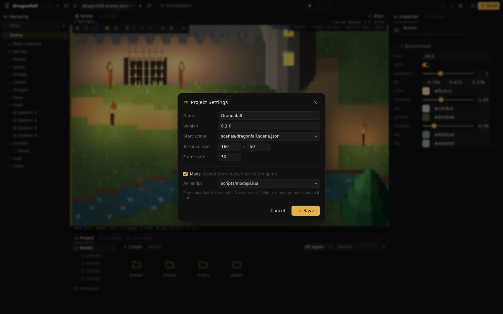

Mods
Mods let the players of a built game extend it with Lua and assets of their own. The developer decides whether a game accepts mods and defines everything they can do in one script, the mod API. Mods cannot reach the scene, GameObjects or components; they call only what the API provides.
Overview
| Part | Written by | Function |
|---|---|---|
| Mod settings | Developer | Turn mod support on and name the API script, in Project Settings. Mods are off by default. |
| API script | Developer | A project script that declares functions, values and events with the api global. It runs in the game with the full Lua API. |
| Events | Developer | Game scripts send declared events to every mod with mods.emit. |
| Mod | Player | A folder in mods/ next to the game with a main.lua and optional assets. |
Enabling mods

scripts/modapi.lua as the API script.- Create the API script, for example
scripts/modapi.lua, see The API script. - Open Project Settings with the sliders button in the toolbar, next to Build.
- Select Mods and choose the script under API script. Press Save.
The settings are stored in the manifest:
"mods": {
"enabled": true,
"api": "scripts/modapi.lua"
}With mods disabled, the game never reads a mods/ folder, builds contain no mods/ folder and mods.emit does nothing.
The other fields of the window edit the manifest as well: Name and Version of the game, the Start scene a build begins with, the Terminal size in columns and rows the game requests, and the Frame rate. A size or frame rate of 0 uses the defaults of 120 by 40 cells and 30 frames per second.
The API script
The API script runs once when the game starts, after the start scene is loaded and before any mod runs. It is an ordinary project script with access to the whole Lua API, and one additional global, api:
| Function | Effect |
|---|---|
api.func(name, fn) | Mods call game.<name>(...), which runs fn in the game with the arguments and returns its first result. |
api.value(name, fn) | Mods read game.<name>(). The function returns a copy of the value; mods cannot change it. |
api.event(name) | Declares an event that mods handle with a global function on_<name>. The event load is built in. |
Names consist of letters, digits and underscores and do not start with a digit. Functions and values share the game table, so each name is used once.
Sending events
Every game script has the global mods. mods.emit(name, ...) calls on_<name>(...) in every mod that defines it, in the order the mods were loaded. The name must be declared with api.event; any other name raises an error. Without mods, the call does nothing, so scripts can send events unconditionally.
-- scripts/rules.lua, on a GameObject of the scene
function key(self, k)
mods.emit("key", k)
endEvents sent from inside a mod handler, through an API function, are delivered to a depth of four; deeper events are dropped.
Writing a mod
A mod is a folder in mods/ next to the game executable. The folder name is the mod's name. A folder without main.lua is ignored.
Dragonfall/
Dragonfall the game
data/game.pak
mods/
coins/
main.lua required
coin.sprite.json optional assets
coin.prefab.json
pickup.wavmain.lua runs once when the game starts. It defines the handlers the mod uses; after every mod has loaded, each mod's on_load() runs.
A mod has these globals:
| Global | Function |
|---|---|
game | The functions and values of the API script. |
log(...) | Writes a message tagged mod:<name>. print does the same. |
asset(path) | Turns a path inside the mod folder into the path the game knows, mods/<name>/<path>, for passing to API functions. Paths that leave the mod folder raise an error. |
vec3(x, y, z) | A vector, as in game scripts. |
math, string, table | The standard Lua libraries. |
Nothing else is available: no find, spawn or other game functions, no files (io, os, require, load), and no access to other mods.
Values across the boundary
Every mod runs in a Lua state of its own. Arguments and results are copied between the mod and the game, and only plain data is copied: numbers, strings, booleans, vectors and tables of these, to a depth of eight. GameObject and component handles, functions and other values become nil. A mod therefore never holds an object of the game; the API decides what it may see.
Assets
The assets of a mod folder are loaded like project assets, under mods/<name>/. Sprites, prefabs, textures, materials, models and sounds created in the editor keep their .meta files. An id the game already uses keeps referring to the game's asset; the mod's copy is then reached by its path. A mod uses its assets by passing asset(path) to an API function that accepts asset paths, such as a spawn function.
Errors and time limit
Every call into a mod has a time limit of 50 milliseconds. A mod that fails to load, raises an error or exceeds the limit is reported with its name; the handler is skipped and the game and the other mods continue. A mod with an error in main.lua is not loaded.
Messages
| Where the game runs | Mod messages and errors |
|---|---|
Built game, ascdii run | mods/log.txt, rewritten at the first message of each run; the terminal shows the game. |
ascdii preview, --preview | Standard error. |
| Editor play mode | The Console, with the source mod:<name>. |
Testing mods
Play mode in the editor and ascdii run load the project's own mods/ folder, so the API can be tested with real mods. Builds leave the project's mods/ folder out of the game data; a folder build of a game with mods enabled contains an empty mods/ folder for players.
Example
The developer exposes spawning, the hero's position and key presses:
-- scripts/modapi.lua
api.func("spawn", function(prefab, x, y)
spawn(prefab, x, y)
return true
end)
api.value("hero_position", function()
return find("hero").position
end)
api.event("key")A mod places its own lantern next to the hero and reports keys:
-- mods/lamp/main.lua
function on_load()
local p = game.hero_position()
game.spawn(asset("lamp.prefab.json"), p.x + 3, p.y)
log("lamp placed at", p.x + 3, p.y)
end
function on_key(k)
log("key", k)
endgame.hero_position() returns a copy of the vector; find is nil inside the mod, so the hero object itself stays out of reach.